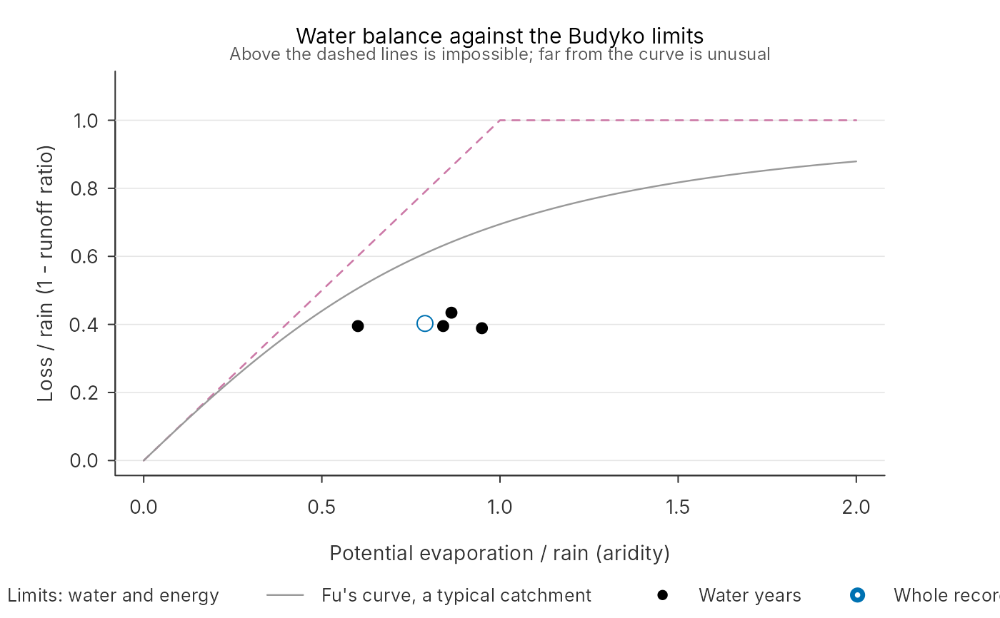
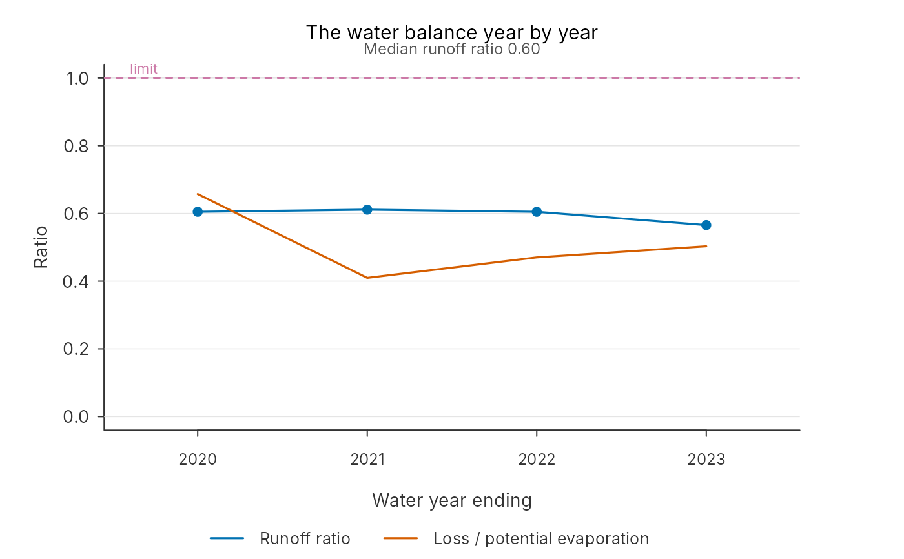

Over a year a catchment stores little, so what it loses, rain minus flow, is mostly evaporation. Two limits follow (Budyko, 1974):
Usage
water_balance(
forcing,
observed,
area_km2,
water_year_start = 10,
min_complete = 0.9,
tolerance = 0.4,
shift = 0.25,
energy_margin = 0.1
)
# S3 method for class 'pdm_water_balance'
plot(x, type = c("budyko", "years", "double_mass"), ...)
# S3 method for class 'pdm_water_balance'
autoplot(object, type = c("budyko", "years", "double_mass"), ...)Arguments
- forcing
Data frame of
time,rainandpet, mm per step.- observed
Observed flow, m3/s, aligned with
forcing.- area_km2
Catchment area.
- water_year_start
Month the water year starts: 10 (October) in the UK.
- min_complete
Least share of a year's flow that must be present to judge the year.
- tolerance
How far a year's runoff ratio may stand from the median of the years, as a share of it, before the year is flagged.
- shift
Change in the mean runoff ratio across a year boundary, as a share, beyond which the record is flagged as changing there. Needs two judged years either side.
- energy_margin
Loss allowed above potential evaporation, as a share of it, before a year is flagged: potential evaporation is itself an estimate.
- x, object
A
pdm_water_balance.- type
One of the plots above.
- ...
Not used.
Value
A pdm_water_balance list: years (one row per water year: steps, share of flow
present, rain, pet, flow and loss in mm, runoff ratio, loss over pet, aridity and flags),
record (the same for the whole record), double_mass (cumulative rain and flow, mm),
change (the year boundary where the runoff ratio changes most), bfi and
flags. plot(): x, invisibly. autoplot(): a ggplot.
Details
The water limit. Flow cannot exceed rain: a runoff ratio above one means the rain is too low, the flow too high or the area wrong.
The energy limit. The loss cannot much exceed the potential evaporation: the atmosphere cannot take more. A loss above it means too much rain, too little flow, an area too large, or water leaving underground past the gauge.
water_balance() measures both for the whole record and for each water year (from
October in the UK), and flags years whose runoff ratio stands apart from the rest: a gauge
moved, a rating revised or a rain gauge that failed for part of the year hide in a record's
average but show in its years. A lasting change, such as a new rating from one year on, can
leave no single year apart from the median, so the years are also split at each boundary in
turn: if the mean runoff ratio after a boundary differs from the mean before by more than
shift, the record is flagged as changing there. Steps with missing flow are left out of all
three totals, so a gap does not look like a dry year; a year with less than min_complete of
its flow is reported but not judged.
It also returns a double-mass curve, cumulative flow against cumulative rain, which is
straight when the two records agree throughout and kinks where one of them changed; and
the baseflow index, the share of flow under the baseflow line of find_events(). That
line follows the flow between events, so the index is close to, but not the same as, the
UK's standard baseflow index from five-day minima: about 0.2 on clay, 0.9 on chalk.
plot() and autoplot() draw:
type | Shows |
budyko | each year's loss over rain against aridity, with both limits and Fu's curve |
years | each year's runoff ratio and loss over potential evaporation, flagged years marked |
double_mass | cumulative flow against cumulative rain, with a line through the ends |
References
Budyko, M. I. (1974). Climate and Life. Academic Press.
Fu, B. P. (1981). On the calculation of the evaporation from land surface. Scientia Atmospherica Sinica, 5, 23-31.
Examples
rain <- synthetic_rain("2019-10-01", years = 4, dt = 1, seed = 4)
forcing <- data.frame(time = rain$time, rain = rain$rain, pet = rain$pet)
config <- modifyList(pdm_presets("standard"), list(area_km2 = 20))
flow <- run_pdm(pdm_from_config(config), forcing)$output$q_m3s
wb <- water_balance(forcing, flow, area_km2 = 20)
wb
#> Water balance over 4.0 years with flow: rain 694 mm, potential evaporation 548 mm, flow 414 mm a year
#> Runoff ratio 0.60; loss over potential evaporation 0.51; baseflow index 0.71
#> year complete rain pet flow ratio loss_pet flag
#> 2020 100% 914 549 553 0.60 0.66
#> 2021 100% 576 547 352 0.61 0.41
#> 2022 100% 652 548 394 0.60 0.47
#> 2023 100% 633 546 358 0.57 0.50
#> Nothing implausible found
plot(wb)

plot(wb, type = "years")
